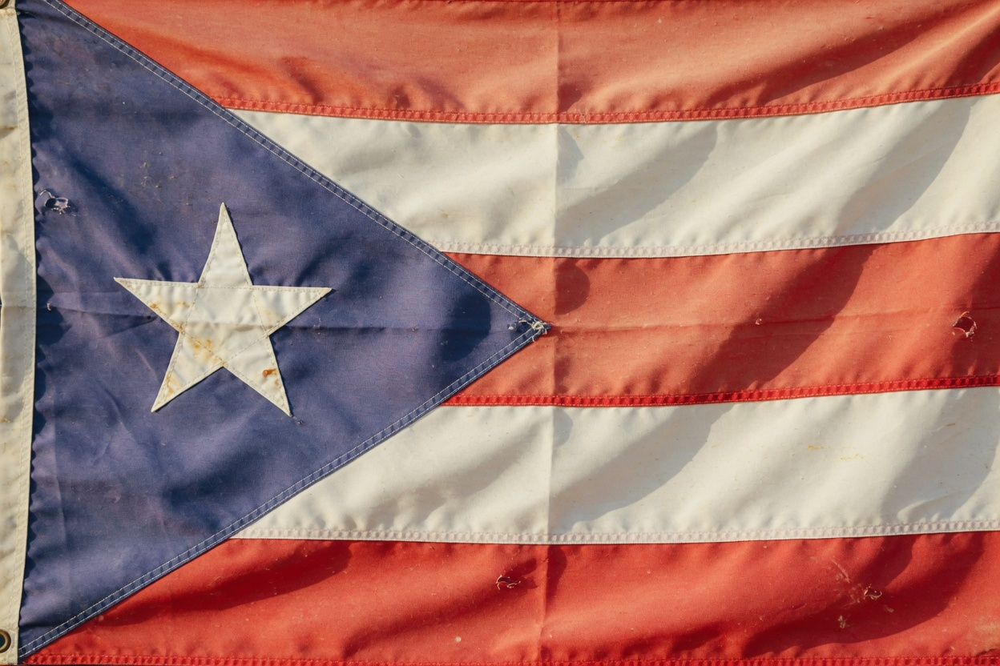
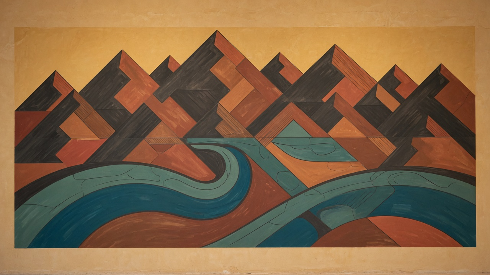

Añasco — gold
Where it started. West-coast hometown range. Warm afternoon, painted houses, hanging flag, ocean over the far wall. First bullet, stop, peek.
Puerto Rico
We use real climate, architecture, and light. We do not photocopy plazas, forts, or lighthouses. The 12 m pit stays the measurement. Only Añasco exists as a vertical slice. The other names are planned light and architecture, not playable maps.
Where it started. West-coast hometown range. Warm afternoon, painted houses, hanging flag, ocean over the far wall. First bullet, stop, peek.

The city. Denser street, urban fill. Not Plaza Colón. Flick, switch, small.

The dry coast. Hard sun, salt, stone. Precision and small targets.
The surf. Sunset sun, wood, ocean. Tracking and reaction. No copied dome or lighthouse.
The capital. Lighting and dense facades. Blockout.
The old city. Warm historic light. No forts.
The northwest. Bright coastal light.
East coast. Cooler, brighter; not Añasco gold.
Status is honest: gold is dressed, skin is architecture plus light, shell is light and horizon. Artwork on this page is in-game.

One natural placement per world. Hanging cloth, shop wall, or pole — not a collectible and not eight identical banners on spawn.

Original murals unlock with visits. Culture lives in the courtyard, never behind UNIT 12.